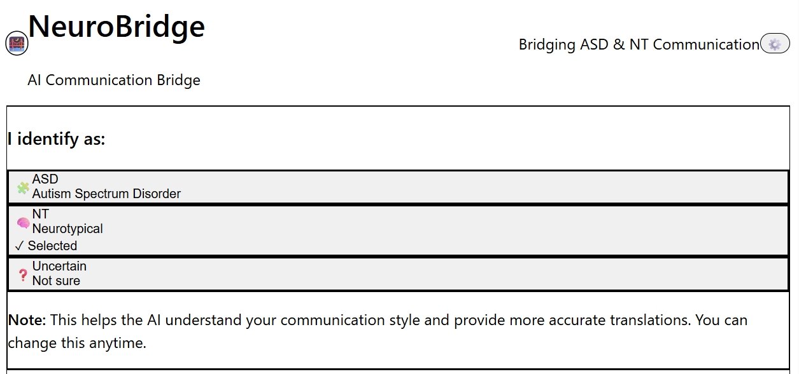
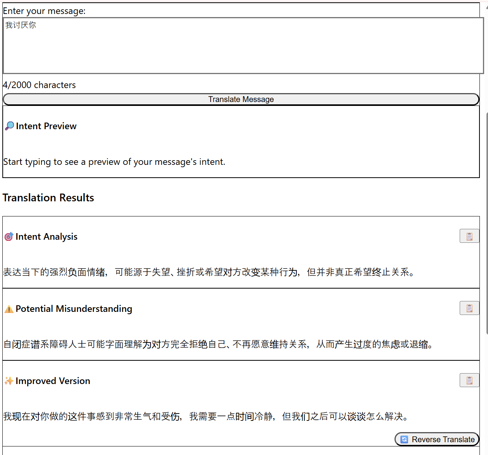
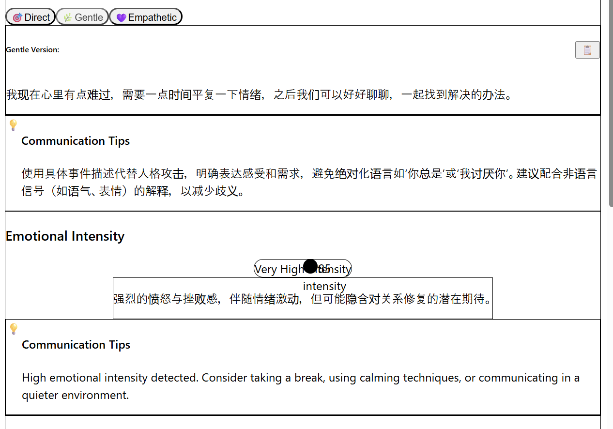
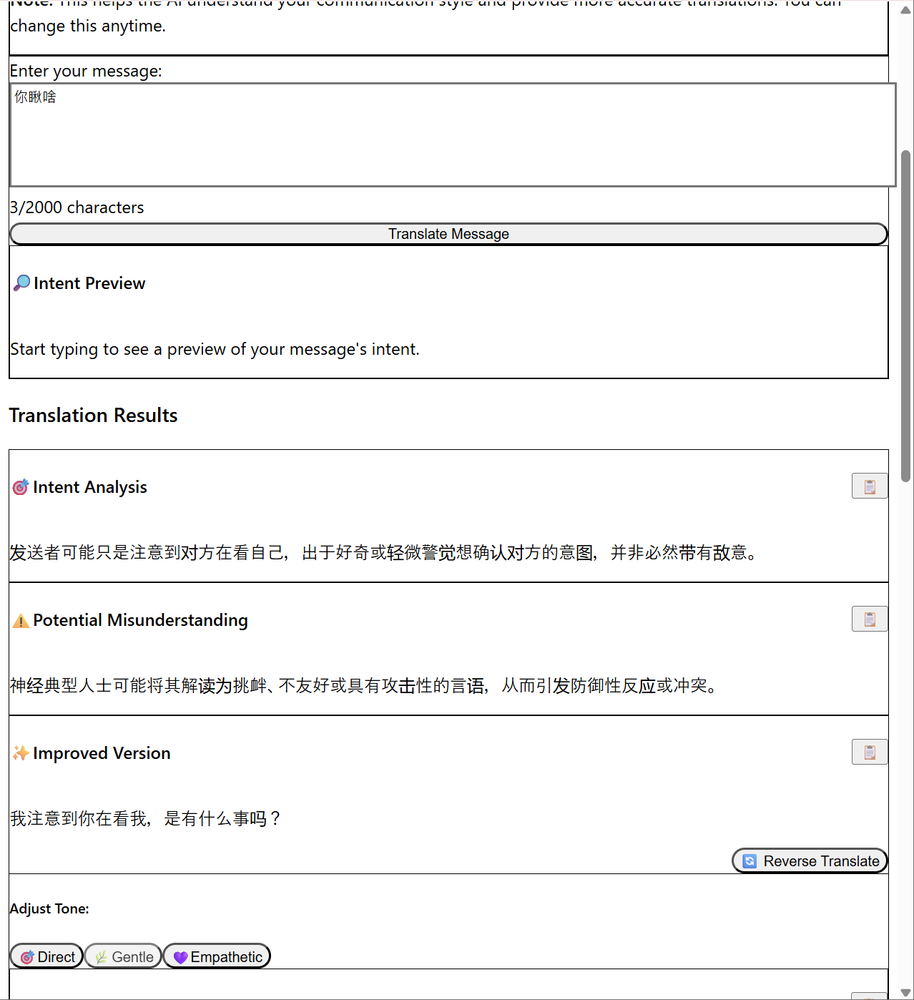

让不同的大脑和平对话
3分钟 Pitch · 2025 · by Desal
💊 ADHD产品太多了...
谁来管管 ASD 了？
🔄 MBTI翻译器的想法很有趣
→ 结合起来，做个真正有用的工具
ASD人士真的很"烦人"吗？
但他们能合作吗？能不"烦人"吗？
✅ 有办法！
NeuroBridge：AI驱动的沟通翻译器
让双方 live in more peace together
Alexithymia（述情障碍）
难以识别、描述和表达自己的情绪
❌ 常见误解
✅ 真实情况
场景1：职场任务
NT说："能帮忙看看这个吗？不急，有空再说。"
→ ASD理解：不急=可以不做 → 没做
翻译后："这个需要你今天完成，优先级中等。"
场景2：社交邀请
NT说："改天一起吃饭吧！"
→ ASD理解：等待具体时间 → 一直等
翻译后："我想和你吃饭，方便的话请告诉我具体日期。"
ASD原文：
"灯太亮了噪音太大了我受不了我要走了！"
情绪强度: 90/100
翻译给NT：
"我正在经历感官超载（灯光和声音刺激过强）。我需要立即转移到安静、光线柔和的环境。这不是针对任何人，而是我的神经系统对环境的生理反应。"
→ 从"情绪崩溃"到"清晰的需求表达"
🗣️ 地域文化差异
东北话："你瞅啥？" → 南方人："他在找事吗？"
翻译：只是普通疑问，无敌意
💼 职场沟通风格
直接型 vs 委婉型
🌐 跨文化交流
高语境 vs 低语境文化
课题分离：是什么就是什么，不过度解读
实时翻译
输入文本 → 选择角色 → 获得翻译 + 意图分析
情绪仪表盘
0-100可视化情绪强度，帮助调节表达
历史记录
学习过往沟通模式，持续改进
🔒 隐私优先：本地处理，不上传敏感信息
NT原文：
"明天的演示你能搞定吗？挺重要的。"
⚠️ 潜在误解：
翻译给ASD：
"明天10点团队会议需要你做演示。这是高优先级任务（重要性8/10）。请准备10分钟PPT，包含项目进度和下周计划。如有困难请在今天下午5点前告知。"




东北话 → 南方人理解 = 完全不同的意思！
甚至可以做"阴阳怪气翻译器"
（但我们还是保持善良中立 😊）
基于权威神经多样性研究：
→ 不是"治疗"，而是"桥梁"
→ 不是"缺陷"，而是"差异"
让每种大脑都被理解
让每次对话都更顺畅
让世界更和平 🕊️
产品已上线 · 欢迎试用
github.com/Stoic42/Neurobridge
Q&A